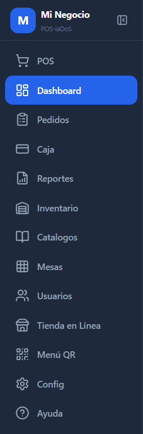
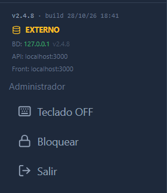

Entrar y moverte por el sistema
Pantalla de entrada, menú lateral y quién ve cada opción.
Entrar
Doble clic en el ícono POS-iaDoS del escritorio. Escribe tu correo y contraseña → Ingresar.
Acceso con PIN: en la misma pantalla, toca Acceso con PIN, elige tu nombre y escribe tu PIN de 4 dígitos. Es lo más rápido para cajeros y meseros.
Los usuarios que creó el instalador y sus claves están en C:\POS-iaDoS\CREDENCIALES.txt. Cámbialas en Usuarios (capítulo 10) y guarda ese archivo en un lugar seguro.

El menú lateral
Cada usuario ve solo lo que le toca según su rol:
| Rol | Ve en el menú |
|---|---|
| Administrador | Todo: POS, Dashboard, Pedidos, Caja, Reportes, Inventario, Catálogos, Mesas, Usuarios, Tienda en Línea, Menú QR, Config, Ayuda. |
| Gerente | POS, Dashboard, Pedidos, Caja, Reportes, Inventario, Ayuda. |
| Cajero | POS, Pedidos, Caja, Reportes, Inventario, Ayuda. Dashboard solo si se activa «Cajero puede ver Dashboard». |
| Mesero | POS, Pedidos, Ayuda. |
Mesas, Logística y Báscula aparecen solo cuando están activadas. Báscula abre el kiosco en una ventana aparte. Tenants, Monitor, Licencias y Conf. Especial solo los ve soporte iaDoS.
El botón de arriba a la derecha del menú lo encoge para dejar más espacio a la pantalla.


El pie del menú
- v2.4.8 · build: la versión instalada. Te la pide soporte.
- BD: 127.0.0.1: la base de datos está en esta misma PC. API y Front localhost:3000: las pantallas también.
- EXTERNO (en ámbar): en esta instalación siempre sale así; es solo una etiqueta, no quiere decir que use internet.
- Teclado ON/OFF: muestra un teclado en pantalla para monitores táctiles. Se recuerda en cada equipo.
- Bloquear: tapa la pantalla con «¿Quién eres?». Para seguir, tocas tu nombre y escribes tu PIN. Sirve para cambiar de cajero sin cerrar sesión.
- Salir: cierra la sesión.